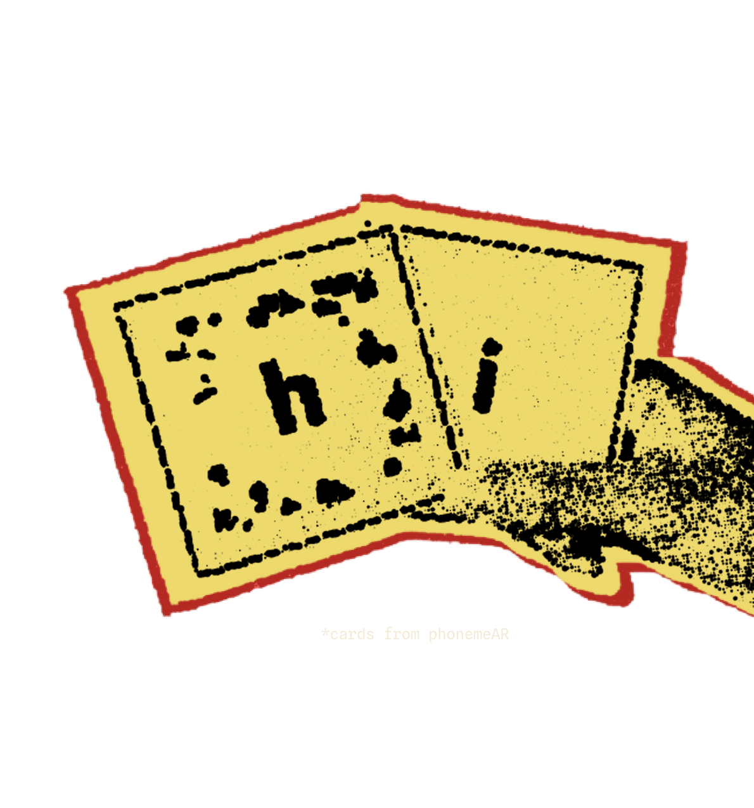
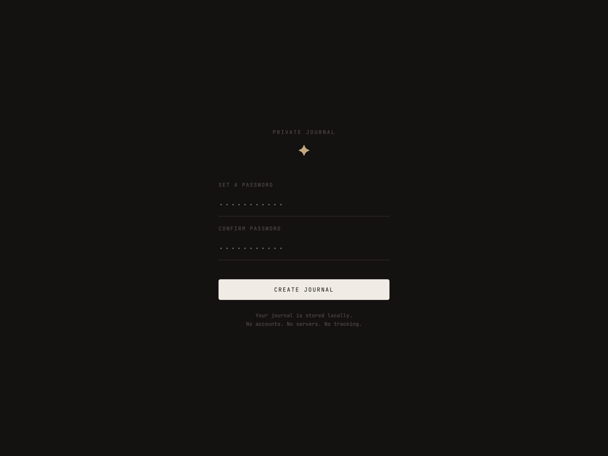
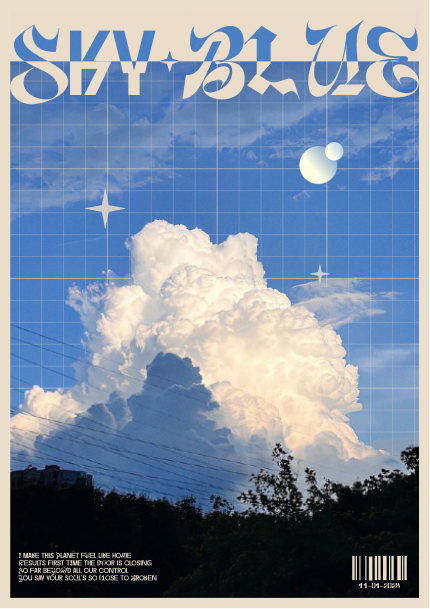
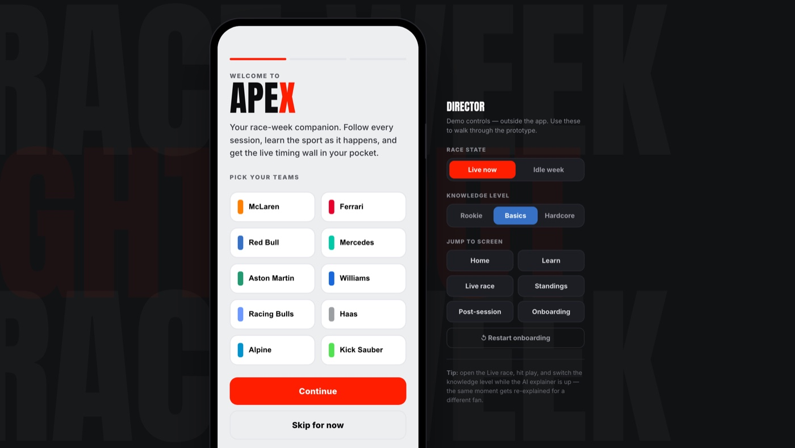
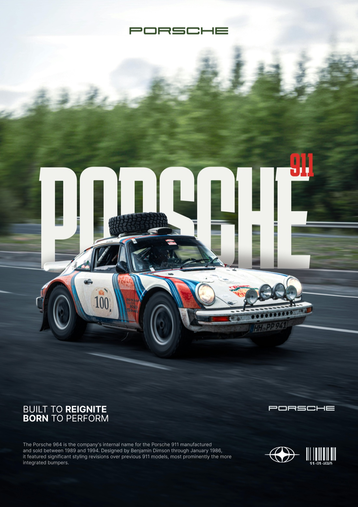
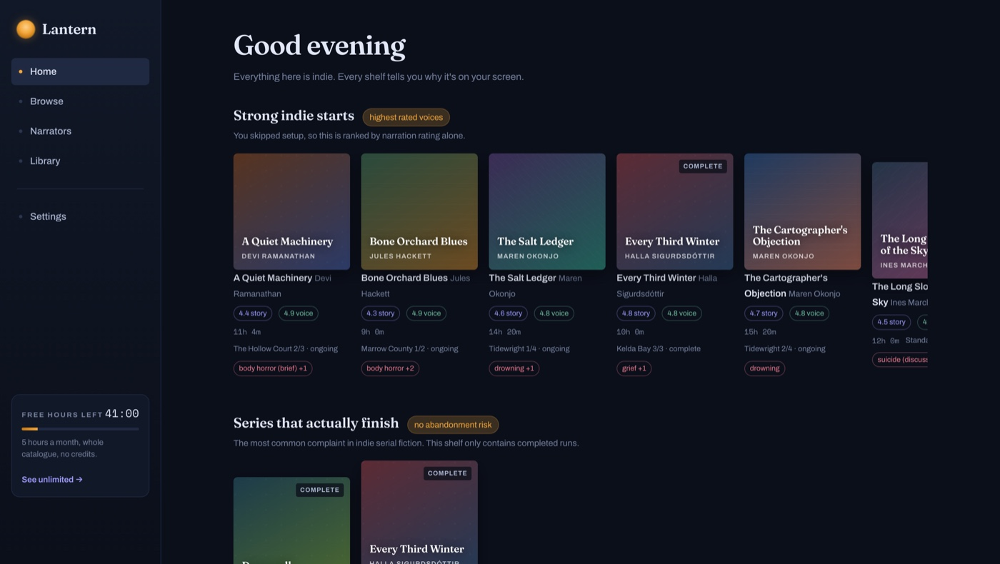
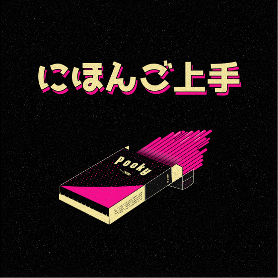

Selected work
A few recent projects across mobile, AR and web.
I want your mum to book her own tickets without calling you. That's most of the job.
Right now that means PhonemeAR, a reading tool for kids who find letters hard. Same feeling, other end of a life. The only thing I've made where I got to watch someone's face when it worked. Looking for a small team to be useful to :)

A few recent projects across mobile, AR and web.
I’m Warren. I design things in Goa and usually end up building them too. Most of what I make is for people who’ve been told they’re bad with technology, which I’ve never thought was their fault. Outside that: cooking, Formula 1, books, and an unreasonable number of photos of clouds.
A mix of built tools, working prototypes, and posters.





